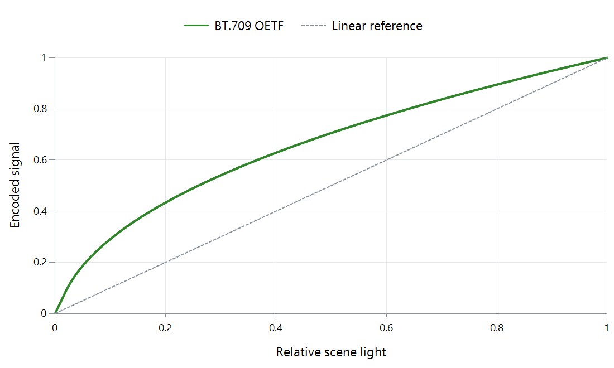

Opto-Electronic Transfer Function (OETF)
An OETF maps scene light into the nonlinear signal used to represent a captured image.
A camera measures light, but the video signal usually represents it nonlinearly. An opto-electronic transfer function, or OETF, supplies that light-to-signal relationship. The BT.709 reference below assigns more signal space to low scene-light levels than a straight linear encoding would.

Normalized scene light becomes a normalized video signal. Neither axis is a raw sensor code or an absolute number of nits.
Encoding and recovering a scene-light value
For normalized scene-light E, the BT.709 curve uses 4.5E below 0.018 and 1.099E^0.45 − 0.099 at or above that point. The lower straight segment avoids the behavior of a bare power near zero. The full function is more precise than calling it simply “gamma 0.45.”
At E = 0.18, the signal is approximately 0.409. The encoded value has increased numerically, but that does not mean the camera recorded more light. It is another representation of the same input.
To return from the upper segment's signal value V to scene light, use E = ((V + 0.099) / 1.099)^(1/0.45). That inverse is what a light-domain processing stage needs when its input uses this encoding.
An averaging example shows why the distinction is useful
Suppose an operation is intended to average two light contributions: black at E = 0 and white at E = 1. Their light average is E = 0.5. Applying the OETF gives a signal of approximately 0.706.
Averaging their encoded values instead gives V = 0.5, because black and white encode to zero and one. Inverting that signal gives scene light of only about 0.260. The two computations therefore describe different results:
| Operation | Resulting scene-light value |
|---|---|
| Average light, then encode | 0.500 |
| Average encoded signals, then interpret | About 0.260 |
The nonlinear relationship is the cause. This matters for operations whose purpose is to combine light contributions, such as a physically motivated blend. Other processing can deliberately choose a perceptual working space; its intended effect determines the right arithmetic.
Capture encoding and display appearance are separate stages
An OETF is not automatically the exact inverse of the eventual display EOTF. The full imaging system also chooses an appropriate relationship between scene light and reproduced light for the viewing environment. The OOTF describes that overall relationship.
For camera footage stored in an Emby library, preserve the actual transfer description through editing and export. A conventional camera signal, a camera-specific log representation, and HDR can use different light relationships even if they share a codec. Correctly converting footage requires interpreting the source, performing the intended rendering, and encoding the destination—not merely assigning it a familiar transfer label.